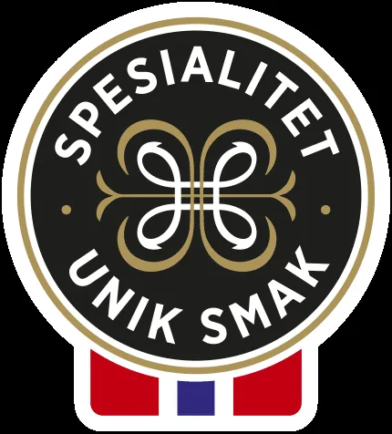

Sjømat · vilt · delikatesser
Det beste av det meste – på bryggen i Kristiansand.
Sjømat, vilt og delikatesser av høy kvalitet. Oppdag smaker og favoritter i nettbutikken, eller stikk innom Fiskebrygga.
Gravane 8Kristiansand
FiskebryggaNorges største
EngrosOg catering
NettbutikkBestill hjem

Produkter
Finn din neste matopplevelse
Hos Reinhartsen finner du egenproduserte ferdigretter og smakfullt tilbehør som gjør det enkelt å servere noe skikkelig godt – også på travle dager.
Fiskebrygga
Kom til Gravane 8
Kom til Gravane 8, 4610 Kristiansand for å oppleve Fiskebrygga – legg turen til Reinhartsen i Kristiansand og opplev Norges største fiskebrygge.
Se levende fisk i fiskekummene og smak Norges beste sjømat.
- Eget utsalg på bryggen.
- Nettbutikk.
- Engros og catering.
| Fiskebasaren | fiskebasaren@reinhartsen.no |
|---|---|
| Catering | catering@reinhartsen.no |
| Engros | engros@reinhartsen.no |
| Telefon | 922 88 500 |
Skal dere ha mat til et arrangement?
Catering- og engrosavdelingen hjelper dere.